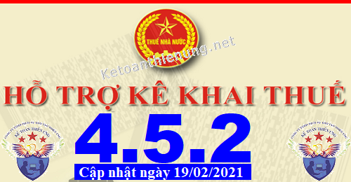

Phần mềm hỗ trợ kê khai thuế HTKK 4.5.2 mới nhất 2021 là Phần mềm HTKK 4.5.2 mới nhất ngày 19/02/2021 của Tổng cục thuế. Download phần mềm HTKK 4.5.2 miễn phí tại đây.
Ngày 19/02/2021 Tổng cục Thuế thông báo về việc Nâng cấp ứng dụng Hỗ trợ kê khai (HTKK) 4.5.2
TỔNG CỤC THUẾ THÔNG BÁO
V/v Nâng cấp ứng dụng Hỗ trợ kê khai (HTKK) phiên bản 4.5.2 cập nhật nghiệp vụ kê khai đáp ứng Nghị định số 126/2020/NĐ-CP, cập nhật địa bàn hành chính đáp ứng Nghị quyết số 1188/NQ-UBTVQH14, 1189/NQ-UBTVQH14, 1191/NQ-UBTVQH14
Tổng cục Thuế thông báo nâng cấp ứng dụng Hỗ trợ kê khai (HTKK) phiên bản 4.5.2 cập nhật các tờ khai 01/GTGT, 02/GTGT, 04/GTGT, 01/PHLP, 02/PHLP đáp ứng yêu cầu nghiệp vụ theo Nghị định số 126/2020/NĐ-CP ngày 19/10/2020 về quy định chi tiết một số điều của luật Quản lý thuế; Cập nhật thay đổi địa bàn hành chính các tỉnh Bình Định, Hòa Bình, Bắc Ninh đáp ứng Nghị quyết số 1188/NQ-UBTVQH14, 1189/NQ-UBTVQH14, 1191/NQ-UBTVQH14 ngày 12/01/2021 của Ủy ban Thường vụ Quốc hội đồng thời cập nhật một số nội dung trong quá trình triển khai HTKK 4.5.1, cụ thể như sau:
1. Cập nhật yêu cầu đáp ứng Nghị định số 126/2020/NĐ-CP
1.1. Cập nhật tờ khai thuế giá trị gia tăng (01/GTGT)
- Cập nhật danh mục ngành nghề tại màn hình kỳ tính thuế:
+ Đối với tờ khai tháng có kỳ tính thuế từ tháng 01/2021, tờ khai quý có kỳ tính thuế từ quý 1/2021 trở đi, danh mục ngành nghề bao gồm:
• Hoạt động sản xuất kinh doanh thông thường
• Xổ số kiến thiết, xổ số điện toán
• Hoạt động thăm dò, khai thác dầu khí
• Chuyển nhượng DAĐT CS hạ tầng, nhà khác tỉnh với nơi có trụ sở chính
• Nhà máy sản xuất điện khác tỉnh với nơi có trụ sở chính
+ Đối với tờ khai tháng có kỳ tính thuế từ tháng 12/2020, tờ khai quý có kỳ tính thuế từ quý 4/2020 trở về trước, danh mục ngành nghề bao gồm:
• Ngành hàng sản xuất, kinh doanh thông thường
• Hoạt động thăm dò, phát triển mỏ và khai thác dầu, khí thiên nhiên
• Hoạt động xổ số kiến thiết của các công ty xổ số kiến thiết
- Cho phép mỗi ngành nghề được phép kê khai 1 tờ khai 01/GTGT của 1 kỳ tính thuế đối với kỳ tính thuế từ tháng 01/2021 trở đi.
1.2. Cập nhật tờ khai thuế giá trị gia tăng dành cho dự án đầu tư (02/GTGT)
- Cập nhật tờ khai tháng có kỳ tính thuế từ tháng 01/2021, tờ khai quý có kỳ tính thuế từ quý 1/2021 trở đi cho phép kê khai nhiều tờ khai có mã dự án đầu tư khác nhau trong cùng 1 kỳ tính thuế.
- Bổ sung các trường nhập dữ liệu về dự án đầu tư, bắt buộc nhập
1.3. Cập nhật tờ khai thuế giá trị gia tăng (04/GTGT)
- Cập nhật tờ khai tháng có kỳ tính thuế từ tháng 01/2021, tờ khai quý có kỳ tính thuế từ quý 1/2021, tờ khai lần phát sinh có kỳ tính thuế từ ngày 01/01/2021, cập nhật các nội dung như sau:
+ Bổ sung checkbox Hoạt động thu hộ CQNN có thẩm quyền giao tại màn hình kỳ tính thuế
+ Nếu tích chọn Hoạt động thu hộ CQNN có thẩm quyền giao tại màn hình kỳ tính thuế:
• Không cho nhập chỉ tiêu [22], [26]
• Tỷ lệ GTGT tại hoạt động kinh doanh khác mặc định là 10%
+ Nếu không tích chọn Hoạt động thu hộ CQNN có thẩm quyền giao tại màn hình kỳ tính thuế:
• Tỷ lệ GTGT tại hoạt động kinh doanh khác mặc định là 2%
+ Cho phép kê khai đồng thời tờ khai có tích chọn thu hộ và không tích chọn thu hộ trong cùng 1 kỳ tính thuế
1.4. Cập nhật Tờ khai phí, lệ phí (01/PHLP)
- Chặn các tiểu mục 2663, 2666, 3003 trên tờ khai 01/PHLP từ kỳ kê khai tháng 01/2021
1.5. Cập nhật tờ khai quyết toán thuế, lệ phí (02/PHLP)
- Chặn các tiểu mục 2663, 2666, tiểu mục lệ phí trên tờ khai 02/PHLP từ kỳ kê khai năm 2021
2. Cập nhật địa bàn hành chính
2.1. Cập nhật địa bàn hành chính thuộc tỉnh Bình Định đáp ứng Nghị quyết số 1188/NQ-UBTVQH14
- Cập nhật xã Cát Tiến thành Thị trấn Cát Tiến thuộc huyện Phù Cát, tỉnh Bình Định
2.2. Cập nhật địa bàn hành chính thuộc tỉnh Hòa Bình đáp ứng Nghị quyết số 1189/NQ-UBTVQH14
- Cập nhật xã Sủ Ngòi thành Phường Quỳnh Lâm thuộc Thành phố Hòa Bình, tỉnh Hòa Bình
- Cập nhật xã Trung Minh thành phường Trung Minh thuộc Thành phố Hòa Bình, tỉnh Hòa Bình
2.3. Cập nhật địa bàn hành chính thuộc tỉnh Bắc Ninh đáp ứng Nghị quyết số 1191/NQ-UBTVQH14
- Cập nhật xã Hương Mạc thành phường Hương Mạc thuộc Thị xã Từ Sơn, tỉnh Bắc Ninh
- Cập nhật xã Phù Chẩn thành phường Phù Chẩn thuộc Thị xã Từ Sơn, tỉnh Bắc Ninh
- Cập nhật xã Phù Khê thành phường Phù Khê thuộc Thị xã Từ Sơn, tỉnh Bắc Ninh
- Cập nhật xã Tam Sơn thành phường Tam Sơn thuộc Thị xã Từ Sơn, tỉnh Bắc Ninh
- Cập nhật xã Tương Giang thành phường Tương Giang thuộc Thị xã Từ Sơn, tỉnh Bắc Ninh
3. Cập nhật một số nội dung phát sinh
- Cập nhật thị xã Sa Đéc thành Thành phố Sa Đéc thuộc tỉnh Đồng Tháp
1.1. Cập nhật tờ khai thuế giá trị gia tăng (01/GTGT)
- Cập nhật danh mục ngành nghề tại màn hình kỳ tính thuế:
+ Đối với tờ khai tháng có kỳ tính thuế từ tháng 01/2021, tờ khai quý có kỳ tính thuế từ quý 1/2021 trở đi, danh mục ngành nghề bao gồm:
• Hoạt động sản xuất kinh doanh thông thường
• Xổ số kiến thiết, xổ số điện toán
• Hoạt động thăm dò, khai thác dầu khí
• Chuyển nhượng DAĐT CS hạ tầng, nhà khác tỉnh với nơi có trụ sở chính
• Nhà máy sản xuất điện khác tỉnh với nơi có trụ sở chính
+ Đối với tờ khai tháng có kỳ tính thuế từ tháng 12/2020, tờ khai quý có kỳ tính thuế từ quý 4/2020 trở về trước, danh mục ngành nghề bao gồm:
• Ngành hàng sản xuất, kinh doanh thông thường
• Hoạt động thăm dò, phát triển mỏ và khai thác dầu, khí thiên nhiên
• Hoạt động xổ số kiến thiết của các công ty xổ số kiến thiết
- Cho phép mỗi ngành nghề được phép kê khai 1 tờ khai 01/GTGT của 1 kỳ tính thuế đối với kỳ tính thuế từ tháng 01/2021 trở đi.
1.2. Cập nhật tờ khai thuế giá trị gia tăng dành cho dự án đầu tư (02/GTGT)
- Cập nhật tờ khai tháng có kỳ tính thuế từ tháng 01/2021, tờ khai quý có kỳ tính thuế từ quý 1/2021 trở đi cho phép kê khai nhiều tờ khai có mã dự án đầu tư khác nhau trong cùng 1 kỳ tính thuế.
- Bổ sung các trường nhập dữ liệu về dự án đầu tư, bắt buộc nhập
1.3. Cập nhật tờ khai thuế giá trị gia tăng (04/GTGT)
- Cập nhật tờ khai tháng có kỳ tính thuế từ tháng 01/2021, tờ khai quý có kỳ tính thuế từ quý 1/2021, tờ khai lần phát sinh có kỳ tính thuế từ ngày 01/01/2021, cập nhật các nội dung như sau:
+ Bổ sung checkbox Hoạt động thu hộ CQNN có thẩm quyền giao tại màn hình kỳ tính thuế
+ Nếu tích chọn Hoạt động thu hộ CQNN có thẩm quyền giao tại màn hình kỳ tính thuế:
• Không cho nhập chỉ tiêu [22], [26]
• Tỷ lệ GTGT tại hoạt động kinh doanh khác mặc định là 10%
+ Nếu không tích chọn Hoạt động thu hộ CQNN có thẩm quyền giao tại màn hình kỳ tính thuế:
• Tỷ lệ GTGT tại hoạt động kinh doanh khác mặc định là 2%
+ Cho phép kê khai đồng thời tờ khai có tích chọn thu hộ và không tích chọn thu hộ trong cùng 1 kỳ tính thuế
1.4. Cập nhật Tờ khai phí, lệ phí (01/PHLP)
- Chặn các tiểu mục 2663, 2666, 3003 trên tờ khai 01/PHLP từ kỳ kê khai tháng 01/2021
1.5. Cập nhật tờ khai quyết toán thuế, lệ phí (02/PHLP)
- Chặn các tiểu mục 2663, 2666, tiểu mục lệ phí trên tờ khai 02/PHLP từ kỳ kê khai năm 2021
2. Cập nhật địa bàn hành chính
2.1. Cập nhật địa bàn hành chính thuộc tỉnh Bình Định đáp ứng Nghị quyết số 1188/NQ-UBTVQH14
- Cập nhật xã Cát Tiến thành Thị trấn Cát Tiến thuộc huyện Phù Cát, tỉnh Bình Định
2.2. Cập nhật địa bàn hành chính thuộc tỉnh Hòa Bình đáp ứng Nghị quyết số 1189/NQ-UBTVQH14
- Cập nhật xã Sủ Ngòi thành Phường Quỳnh Lâm thuộc Thành phố Hòa Bình, tỉnh Hòa Bình
- Cập nhật xã Trung Minh thành phường Trung Minh thuộc Thành phố Hòa Bình, tỉnh Hòa Bình
2.3. Cập nhật địa bàn hành chính thuộc tỉnh Bắc Ninh đáp ứng Nghị quyết số 1191/NQ-UBTVQH14
- Cập nhật xã Hương Mạc thành phường Hương Mạc thuộc Thị xã Từ Sơn, tỉnh Bắc Ninh
- Cập nhật xã Phù Chẩn thành phường Phù Chẩn thuộc Thị xã Từ Sơn, tỉnh Bắc Ninh
- Cập nhật xã Phù Khê thành phường Phù Khê thuộc Thị xã Từ Sơn, tỉnh Bắc Ninh
- Cập nhật xã Tam Sơn thành phường Tam Sơn thuộc Thị xã Từ Sơn, tỉnh Bắc Ninh
- Cập nhật xã Tương Giang thành phường Tương Giang thuộc Thị xã Từ Sơn, tỉnh Bắc Ninh
3. Cập nhật một số nội dung phát sinh
- Cập nhật thị xã Sa Đéc thành Thành phố Sa Đéc thuộc tỉnh Đồng Tháp
------------------------------------------------------------------------
Bắt đầu từ ngày 20/02/2021, khi lập hồ sơ khai thuế có liên quan đến nội dung nâng cấp nêu trên, tổ chức, cá nhân nộp thuế sẽ sử dụng các chức năng kê khai tại ứng dụng HTKK 4.5.2 thay cho các phiên bản trước đây.

----------------------------------------------------------------------------
Download Phần mềm HTKK 4.5.2 tại đây:

Để cài đặt được HTKK 4.5.2, máy tính của NNT cần đáp ứng thông số sau:
- Hệ điều hành WinXP (SP2, SP3), Win 7 trở lên… (không hỗ trợ hệ điều hành iOS, Mac).
- Máy tính có cài .NET Framework 3.5 trở lên (có thể tải bộ cài .NET Framework 3.5 tại đây).
- Nếu máy tính sử dụng hệ điều hành Win 7 trở lên không phải cài đặt .NET Framework 3.5 mà chỉ cần kích hoạt .NET Framework 3.5 đã tích hợp sẵn theo tài liệu hướng dẫn cài đặt tại đây
- Hệ điều hành WinXP (SP2, SP3), Win 7 trở lên… (không hỗ trợ hệ điều hành iOS, Mac).
- Máy tính có cài .NET Framework 3.5 trở lên (có thể tải bộ cài .NET Framework 3.5 tại đây).
- Nếu máy tính sử dụng hệ điều hành Win 7 trở lên không phải cài đặt .NET Framework 3.5 mà chỉ cần kích hoạt .NET Framework 3.5 đã tích hợp sẵn theo tài liệu hướng dẫn cài đặt tại đây
-----------------------------------------------------------------------------------------------
- Mọi phản ánh, góp ý của tổ chức, cá nhân nộp thuế được gửi đến cơ quan Thuế theo các số điện thoại, hộp thư điện tử hỗ trợ NNT về ứng dụng HTKK do cơ quan Thuế cung cấp.
Tổng cục Thuế trân trọng thông báo./.
-----------------------------------------------------------------------
Trường hợp: Máy tính các bạn đã cài phần mềm HTKK 4.5.1 rồi -> Các bạn chỉ cần Bật phần mềm HTKK 4.5.1 đó lên -> Phần mềm sẽ hiển thị Thông báo cập nhật lên Phần mềm HTKK 4.5.2 -> Các bạn bấm nút "Có"

-> Tiếp đó đợi phần mềm chạy cập nhật là xong nhé:

Như vậy là các bạn đã nâng cấp xong Phần mềm HTKK 4.5.2 nhé
------------------------------------------------------------------------